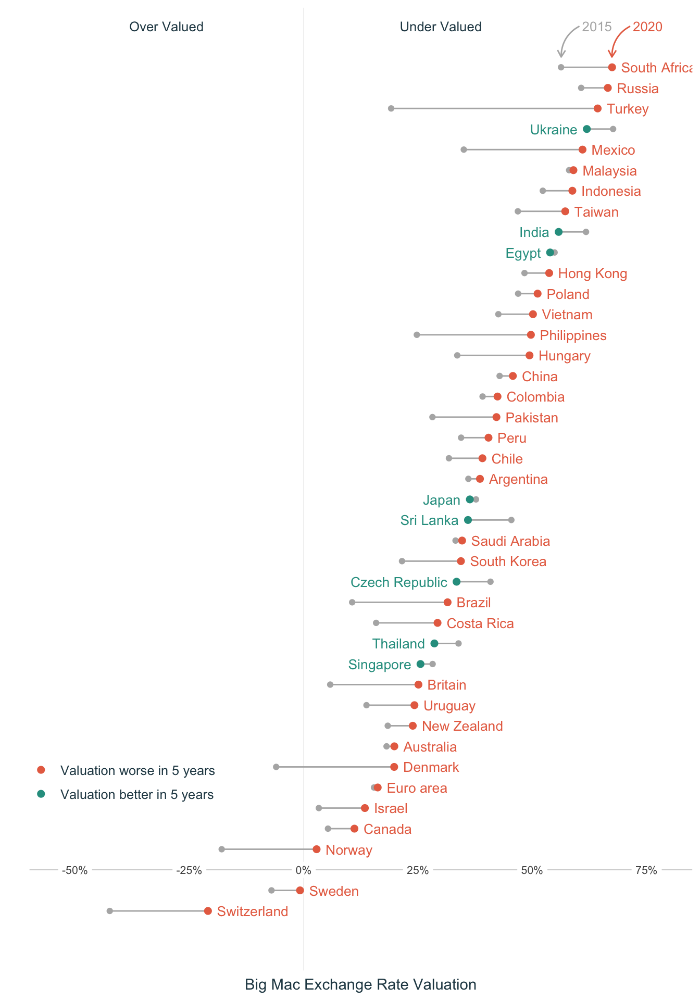

For my first #TidyTuesday post, I've attempted a comparison of the 2015 to 2020 movement of the Big Mac index : https://t.co/AOGOvt3ve5#RStats #dataviz #r4ds #ggplot2 pic.twitter.com/1TZTpAo3s0
— Rahul (@rsangole) January 6, 2021
TidyTuesday - Big Mac Index
TidyTuesday
Visualization
library(tidyverse)
library(ggplot2)
library(ggrepel)
library(ggdark)
library(ggtext)
bigmac <- data.table::fread("big-mac.csv")
bigmac_us_dat <- bigmac %>%
dplyr::filter(currency_code == "USD") %>%
dplyr::select(date, bigmac_us_price_USD = local_price)
bigmac_value_dat <- bigmac %>%
dplyr::select(date,
currency_code,
name,
bigmac_local_price = local_price,
dollar_ex) %>%
dplyr::left_join(
y = bigmac_us_dat,
on = date
)
bigmac_value_dat <- bigmac_value_dat %>%
dplyr::mutate(
bigmac_ex_rate = bigmac_local_price / bigmac_us_price_USD,
valuation = 1 - bigmac_ex_rate / dollar_ex
)
bigmac_value_dat %>%
dplyr::select(date, name, valuation) %>%
dplyr::filter(date %in% as.Date(c("2020-07-01", "2015-07-01"))) %>%
tidyr::pivot_wider(names_from = date, values_from = valuation) %>%
janitor::clean_names() %>%
dplyr::mutate(movement = x2020_07_01 - x2015_07_01,
bw = ifelse(x2020_07_01 > x2015_07_01, "Valuation worse in 5 years", "Valuation better in 5 years"),
bw = ifelse(name == "United States", "ref", bw),
bw = factor(bw, levels = c("Valuation worse in 5 years", "Valuation better in 5 years", "ref")),
name = forcats::fct_reorder(name, x2020_07_01),
label_pos = ifelse(bw == "Valuation worse in 5 years",
x2020_07_01 + 0.02,
x2020_07_01 - 0.02)) %>%
dplyr::arrange(movement) %>%
tidyr::drop_na()-> to_plot
glimpse(to_plot)Rows: 42
Columns: 6
$ name <fct> Sri Lanka, Czech Republic, India, Ukraine, Thailand, Singa…
$ x2015_07_01 <dbl> 0.45409867, 0.40840293, 0.61738434, 0.67662319, 0.33855599…
$ x2020_07_01 <dbl> 0.359218095, 0.334283358, 0.557499169, 0.619139345, 0.2857…
$ movement <dbl> -0.094880571, -0.074119572, -0.059885175, -0.057483840, -0…
$ bw <fct> Valuation better in 5 years, Valuation better in 5 years, …
$ label_pos <dbl> 0.33921810, 0.31428336, 0.53749917, 0.59913935, 0.26574757…to_plot %>%
ggplot(aes(y = name, color = bw)) +
geom_hline(yintercept = 3,
color = "gray80",
size = 0.3) +
geom_vline(xintercept = 0,
color = "gray90",
size = 0.2) +
geom_point(aes(x = x2015_07_01), color = "gray70", size = 1.5) +
geom_segment(aes(x = x2020_07_01, xend = x2015_07_01, yend = name), color = "gray70") +
geom_point(
data = to_plot %>% filter(name != "United States"),
mapping = aes(x = x2020_07_01),
size = 2
) +
geom_text(
data = to_plot %>% filter(bw == "Valuation worse in 5 years"),
mapping = aes(x = label_pos, y = name, label = name),
size = 3.5,
hjust = 0,
show.legend = FALSE
) +
geom_text(
data = to_plot %>% filter(bw == "Valuation better in 5 years"),
mapping = aes(x = label_pos, y = name, label = name),
size = 3.5,
hjust = 1,
show.legend = FALSE
) +
geom_label(
data = data.frame(
x = c(-0.5, -0.25, 0, 0.25, 0.50, 0.75),
y = c(3, 3, 3, 3, 3, 3)
),
mapping = aes(
x = x,
y = y,
label = scales::label_percent()(x)
),
size = 2.8,
color = "gray30",
hjust = 0.5,
label.size = 0,
label.padding = unit(0.2, "lines")
) +
annotate(
geom = "curve",
xend = 0.674,
yend = 42.5,
x = 0.674 + 0.04,
y = 44,
curvature = .3,
arrow = arrow(length = unit(2, "mm")),
color = "#e76f51"
) +
annotate(
geom = "text",
x = 0.674 + 0.04 + 0.006,
y = 44,
label = "2020",
hjust = "left",
size = 3.4,
color = "#e76f51"
) +
annotate(
geom = "curve",
xend = 0.563,
yend = 42.5,
x = 0.563 + 0.04,
y = 44,
curvature = .3,
arrow = arrow(length = unit(2, "mm")),
color = "gray70"
) +
annotate(
geom = "text",
x = 0.563 + 0.04 + 0.006,
y = 44,
label = "2015",
hjust = "left",
size = 3.4,
color = "gray70"
) +
theme_minimal() +
theme(
axis.text = element_blank(),
panel.grid.major = element_blank(),
panel.grid.minor = element_blank(),
axis.title.x = element_text(color = "#264653")
) +
theme(
legend.position = c(0.14, 0.2),
legend.title = element_blank(),
legend.text = element_text(color = "#264653", size = 9.5)
) +
scale_color_manual(values = c("#e76f51", "#2a9d8f")) +
scale_x_continuous(
labels = scales::label_percent(),
breaks = c(-0.5, -0.25, 0, 0.25, 0.5, 0.75),
expand = c(0, 0.1)
) +
scale_y_discrete(expand = c(-0.1, 7)) +
annotate(
geom = "text",
x = -0.3,
y = 44,
label = "Over Valued",
size = 3.4,
color = "#264653"
) +
annotate(
geom = "text",
x = 0.3,
y = 44,
label = "Under Valued",
size = 3.4,
color = "#264653"
) +
labs(x = "Big Mac Exchange Rate Valuation", y = "")